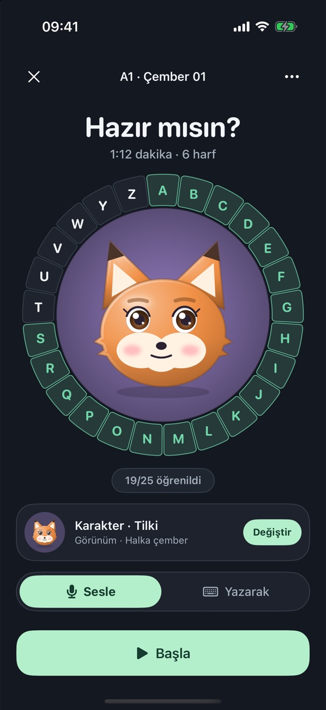
Hazırlan.
Karakterini ya da kameranı seç, çember stilini belirle. Sesle mi yazarak mı oynayacağına karar ver.
Türkçe ipucunu dinle, İngilizce cevabını söyle ya da yaz. Her doğru kelime bahçene bir filiz, her tamamlanan çember bir çiçek ekler.
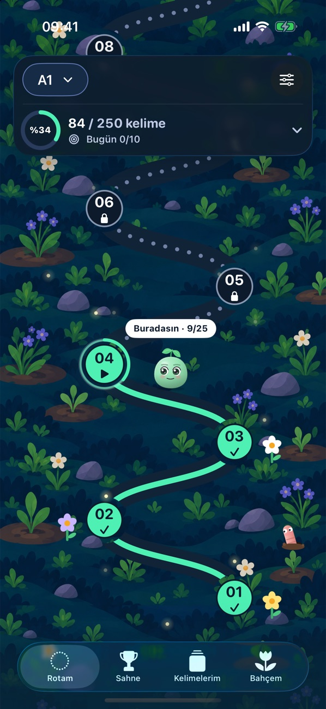
Her çemberde 25 harf, her harfte bir Türkçe ipucu. İngilizce cevabı bul, sıradaki harfe geç.

Karakterini ya da kameranı seç, çember stilini belirle. Sesle mi yazarak mı oynayacağına karar ver.
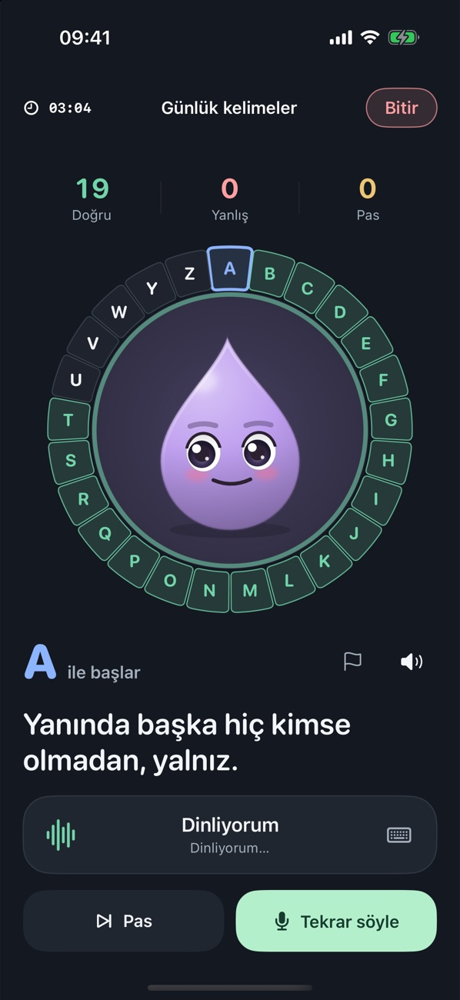
Doğal seslendirilmiş ipucunu dinle. Takıldığında “pas” de, o harf turun sonunda yeniden gelir.
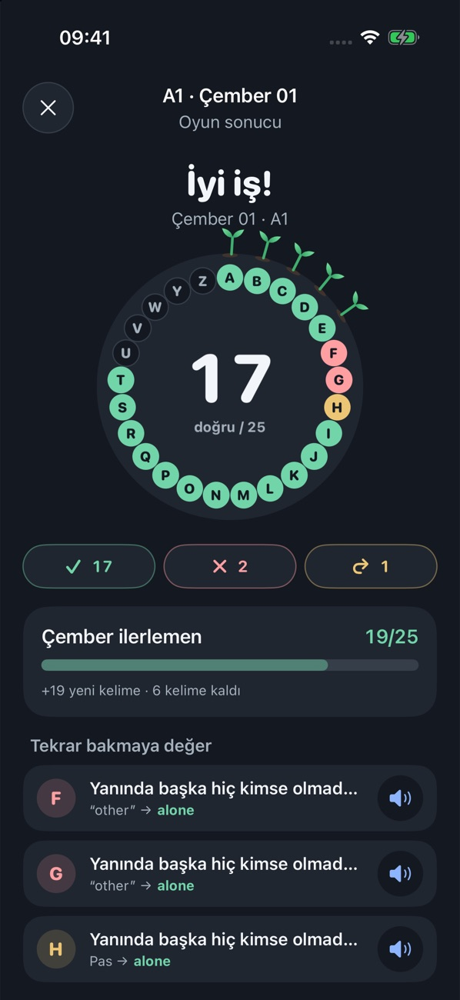
Doğru bildiğin harflerden filizler çıkar. Harf harf cevaplarını incele, kaçırdıklarını “Eksikleri oyna” ile hemen tamamla.
Kendi seviyende, kendi temponda. Sessiz bir ortamdaysan yazarak, yoldaysan internet olmadan.
Altı seviyede 80 çember. Her çemberi tamamladıkça bahçe yolunda bir sonraki açılır.
2.000 sorunun tamamı doğal bir sesle kaydedildi. Okuma hızını ve telaffuz sesini ayarlardan seçebilirsin.
Sesli cevapların iPhone’unda yazıya çevrilir, ses kaydın cihazından çıkmaz. Yanlış duyulursa yazarak düzeltirsin.
Çemberin ortasında kendi yüzün, seçtiğin karakter ya da yüz ifadeni taklit eden hareketli karakter olsun.
Halka, Aralıklı, Pullar, Sade ve Petek stilleri; mintten şeftaliye altı renk.
Bir çemberi indirdikten sonra internetsiz oyna. Sonuçların bağlantı geldiğinde hesabınla eşitlenir.
Seviye etiketleri CEFR-J ve Octanove kelime listelerine dayanır; bir sınav sonucu veya yeterlilik belgesi değildir.
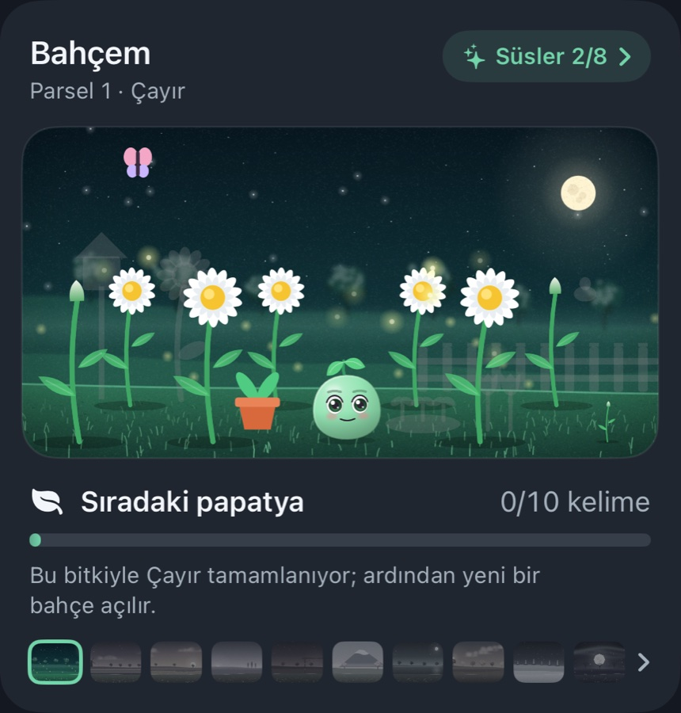
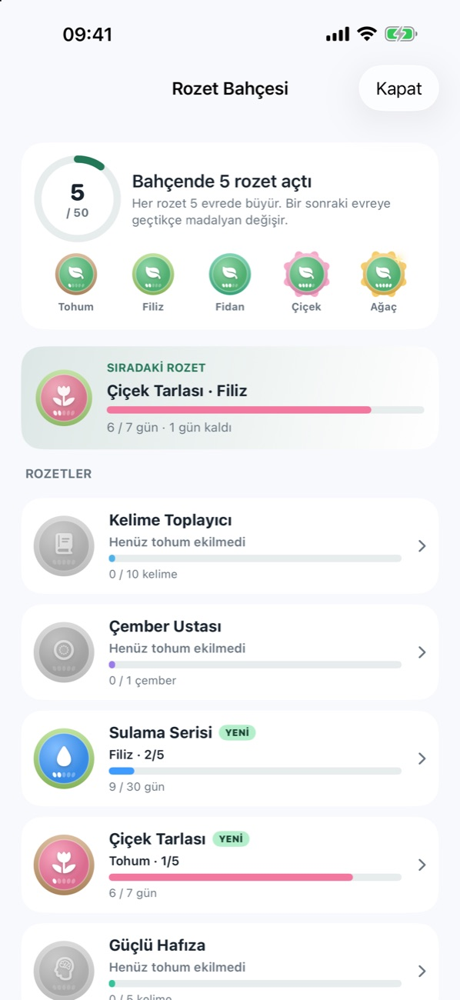
Öğrendiğin her 10 kelime bahçene yeni bir bitki diker, tamamladığın her çember onları çiçeklendirir. Sekiz bitkiyle bahçe dolar ve sıradaki bahçe açılır.
Çayırdan Ay Bahçesi’ne her bahçenin kendi bitkisi ve canlıları var. Tamamladığın bahçeler “Bahçelerim”de çiçek açmış hâliyle kalır.
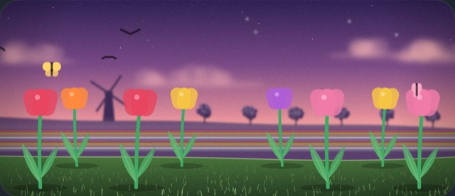
Lale Bahçesilale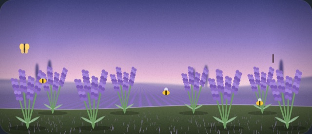
Lavanta Tarlasılavanta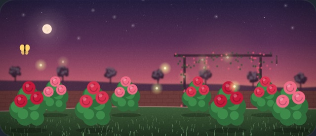
Gül Bahçesigül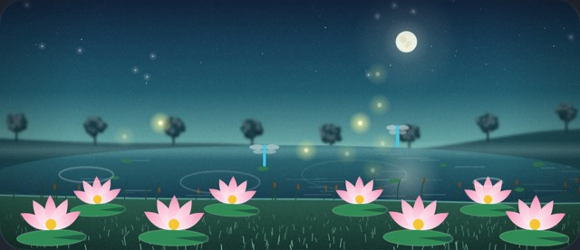
Su Bahçesinilüfer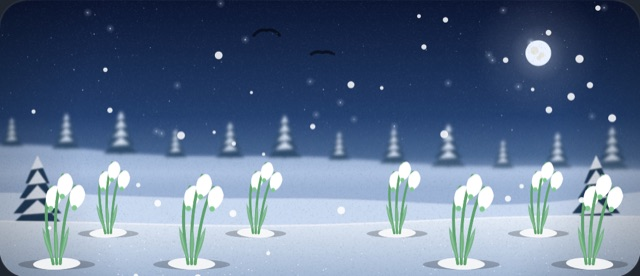
Kış Bahçesikardelen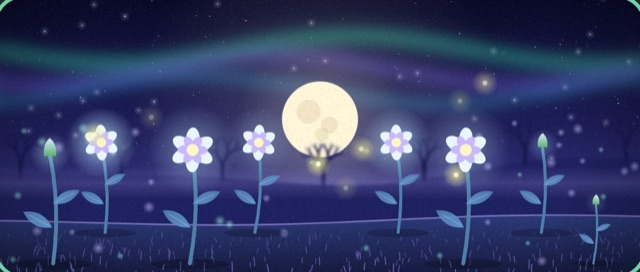
Ay Bahçesiay çiçeğiKaçırdığın ve pas geçtiğin kelimeler kendiliğinden Kelimelerim’e eklenir. Aralıklı tekrar, her kelimeyi unutmak üzereyken karşına çıkarır.
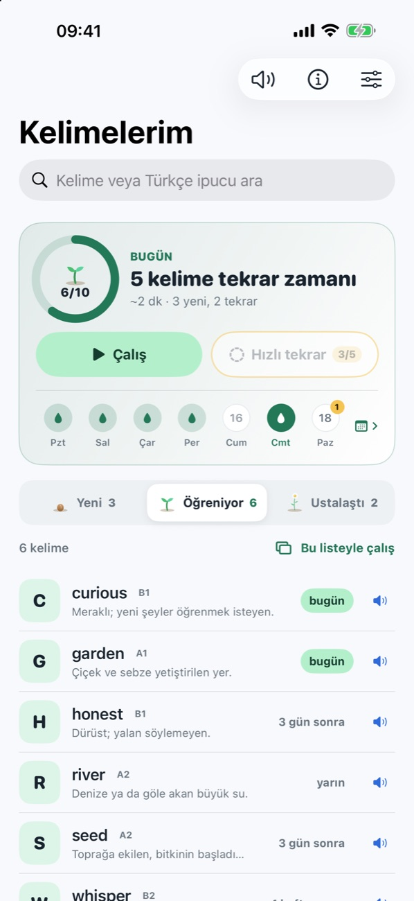
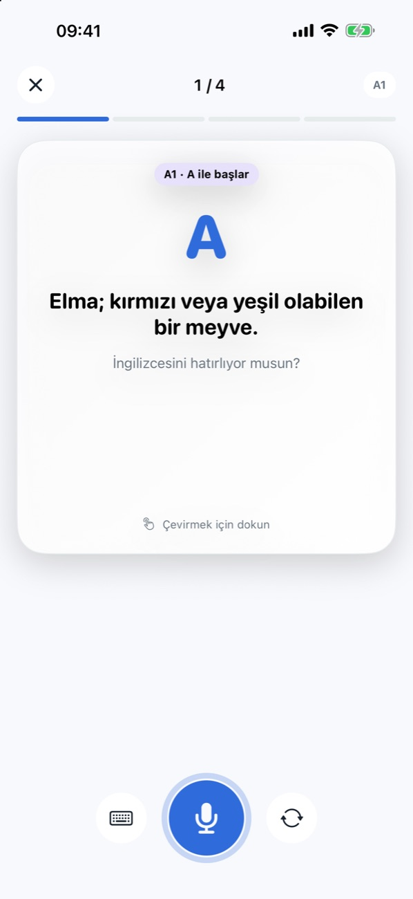
Ayın 1’inde, 11’inde ve 21’inde yeni bir fener yanar. Her turda kendi seviyende yepyeni bir çember seni bekler.
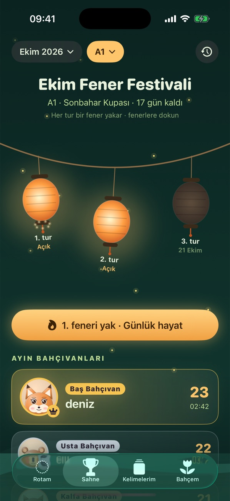
İngilizce kelime dağarcığını Türkçe ipuçlarıyla geliştirmek ve konuşarak pratik yapmak isteyen herkes için. A1’den C2’ye altı seviye rotası, nereden başlarsan başla sana uygun bir çember sunar.
Evet. Giriş ekranındaki “Misafir olarak dene” ile hemen oynamaya başlayabilirsin. İstersen daha sonra Apple ile ya da e-postayla devam edebilirsin.
Hayır. Her an sesli ve yazılı cevap arasında geçiş yapabilirsin. Yazılı modda mikrofon izni istenmez. Sesli cevaplar iPhone’unda yazıya çevrilir; ses kaydın cihazından çıkmaz.
Kamera tamamen isteğe bağlıdır. Açarsan yüzün çemberin ortasında ya da arkasında görünür veya hareketli karakter yüz ifadeni taklit eder. Görüntü kaydedilmez ve cihazından çıkmaz.
Her ay üç tur vardır: ayın 1’i, 11’i ve 21’i. Her turda seviyene özel yeni bir çember açılır. İlk denemen sıralamaya girer; sonraki denemeler pratik içindir ve sıralamayı değiştirmez.
Evet. İndirdiğin çemberleri internetsiz oynayabilirsin. Giriş, yeni çember ve ses indirme, Sahne ve ilerlemeni hesabınla eşitleme için internet gerekir.
Passalingo henüz App Store’da yayımlanmadı. Yayınlandığında indirme bağlantısı bu sayfada yer alacak. Soruların için aşağıdaki formdan bize ulaşabilirsin.
Uygulamada Ayarlar → Hesap → Hesabı sil adımlarını izleyebilirsin. Profilin, ilerlemen, bahçen ve rozetlerin silinir. Ayrıntılar gizlilik politikamızda.
Sorun, önerin veya geri bildirimin mi var?
Passalingo’yu birlikte büyütelim.